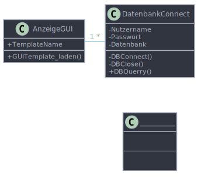
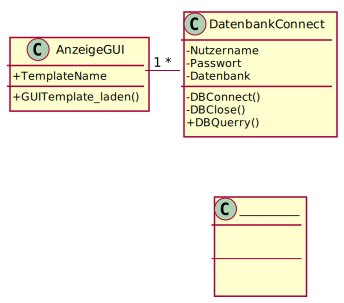
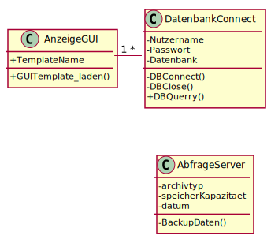

Lernfeld 5#
Sequenzdiagram#

Aufgaben#
Vervollständige das Diagramm#
test in einer anderen farbe…
Aufgabe
Erstellen Sie eine Klasse mit dem Namen AbfrageServer.
Legen Sie eine private Methode mit dem Namen BackupDaten an.
Legen Sie die privaten Attribute Archivtyp, Speicherkapazität und Datum an.
Stellen Sie eine Assoziation zwischen den Klassen AbfrageServer und Datenbank her.


Lösung
